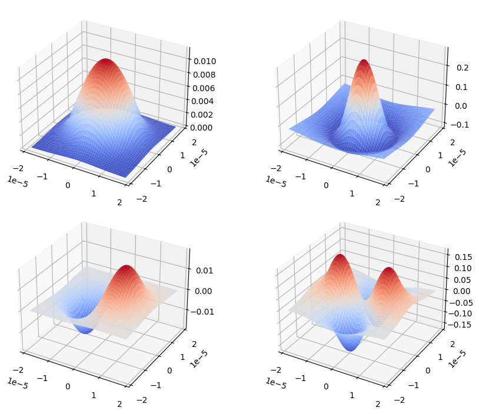
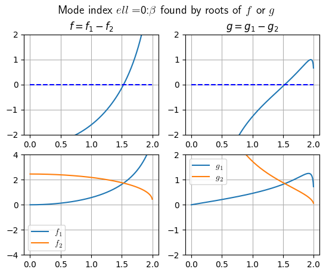
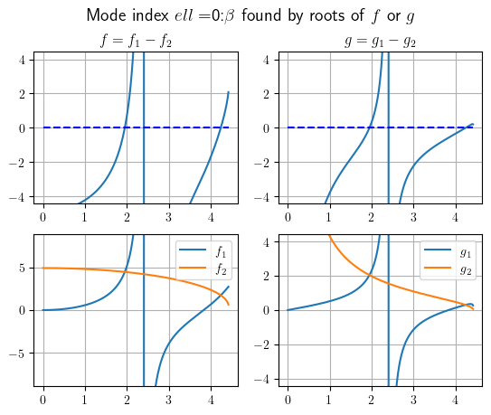
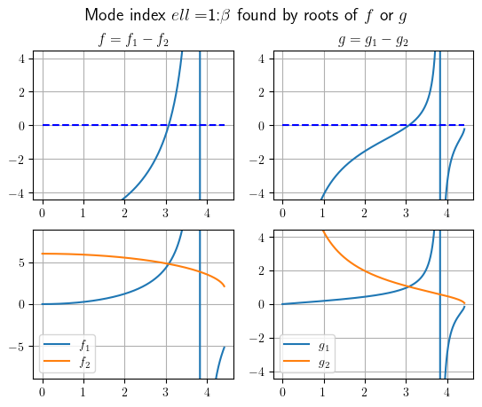
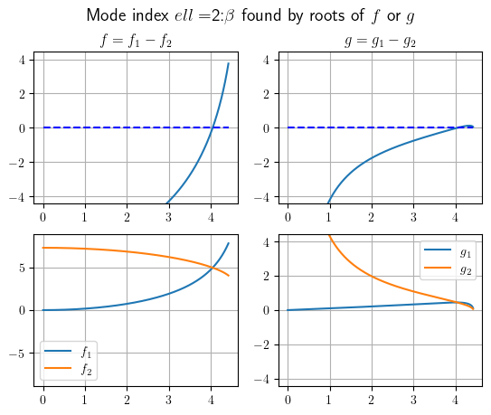

1.1. Analytic expressions for guided modes of a step-index fiber#
The cross section of a step-index fiber, modeled in the \(xy\)-plane, consists of a circular core surrounded by a circular cladding. The refractive index \(n(x, y)\) of such a fiber is a piecewise constant function taking one value in the core and another in the cladding. The purpose of this notebook is to show how guided modes of such a fiber can be computed semi-analytically using fibermode facilities.
Guided modes#
The guided modes of a waveguide are functions \(\varphi_m(x, y)\), each of which, together with their real propagation constant \(\beta_m\), satisfies the two-dimensional Helmholtz eigenvalue equation in the \(xy\)-plane,
for some given wavenumber \(k\) determined by the operating wavelength. Guided modes decay exponentially out in the cladding. Then solutions of the form \(u(x, y, z) = e^{i \beta_m z} \varphi_m(x, y)\) solve the three-dimensional Helmholtz equation of a wave propagating along the longitudinal (\(z\)) direction of the fiber.
For step-index fibers, such guided modes \(\varphi_m\) are called LP (linearly polarized) modes, and are indexed by two integers \(\ell, m\) (instead of a single index). Such \(\varphi_{\ell m}\) are referred to as \(LP_{\ell m}\)-modes in the optics literature. The \(\ell\)-index (\(\ell\ge 0\)) indicates the angular variations and the \(m\)-index (\(m\ge 1\)) specifies the radial variations. Expressions for the \(LP_{\ell m}\) modes can be computed exactly in closed form in terms of the standard Bessel function \(\mathcal{J}_\ell\) and the modified Bessel function \(\mathcal{K}_\ell\) of the second kind. The closed-form expressions are obtained after solving the so-called characteristic equation of the fiber.
This equation is expressed in terms of the V-number, a useful parameter for determining the number of guided modes of the waveguide, defined by
where \(n_{\text{core}}\) and \(n_{\text{clad}}\) represent the core and cladding refractive indices, and \(r_{\text{core}}\) is the core radius. From standard derivations (see e.g., [1]), we have the characteristic equation
For each \(\ell\), this is a nonlinear equation for a nondimensional quantity \(X\) from which the modes and the dimensional mode propagation constants can be obtained as described next.
Let us denote the (potentially many) roots of the \(\ell\)th characteristic equation by \(X_{\ell m}\). Set \(\mathcal{R}_{\ell m}=X_{\ell m}/r_{\text{core}}\) and \(\mathcal{G}_{\ell m}=\sqrt{\beta_{\ell m}^2-n_{\text{clad}}^2 k^2}\). With the \(X_{\ell m}\) solving the characteristic equation, the corresponding \(LP_{\ell m}\) modes take the following form in polar coordinates \(r, \theta\):
The nondimensional \(X_{\ell m}\) is related to the propagation constant \(\beta_{\ell m}\) by
We can rearrange this to find the propagation constant
Facilities to solve for \(X_{\ell m}\) and compute \(\varphi_{\ell m}\) and \(\beta_{\ell m}\) from the above formulas are implemented in the StepIndexExact class of the fibermode module.
Making a step-index fiber object#
A number of realistic optical fiber parameters are stored in fibermode and accessible by their name. Here is the list of all available names.
from fibermode import named_stepindex_fibers
list(named_stepindex_fibers.keys())
['Nufern_Yb',
'Nufern_Tm',
'corning_smf_28_1',
'corning_smf_28_2',
'liekki_1',
'liekki_2']
import warnings
warnings.filterwarnings('ignore', category=RuntimeWarning)
warnings.filterwarnings('ignore', category=UserWarning)
One way to make a step-index fiber model is by using one of these names, as follows.
from fibermode import StepIndexExact
f = StepIndexExact('Nufern_Yb')
print(f)
STEP INDEX FIBER ATTRIBUTES: -------------------------------------------
ks: 5.90525e+06 signal wavenumber
wavelength: 1.064e-06 signal wavelength
V: 4.42894 V-number of fiber
ncore: 1.45097 core refractive index
nclad: 1.44973 cladding refractive index
NA: 0.06 numerical aperture
rcore: 1.25e-05 core radius
rclad: 0.0002 cladding radius
------------------------------------------------------------------------
One can now ask the object f for its guided modes and query further properties. All methods are seen in help(StepIndexExact).
Another way to make a step-index fiber object is by providing the minimal necessary parameter values (instead of a preset name). This is shown next.
A single-mode fiber#
fib = StepIndexExact(rcore=1, rclad=10, ncore=1, NA=0.5, ks=4)
print(fib)
STEP INDEX FIBER ATTRIBUTES: -------------------------------------------
ks: 4 signal wavenumber
wavelength: 1.5708 signal wavelength
V: 2 V-number of fiber
ncore: 1 core refractive index
nclad: 0.866025 cladding refractive index
NA: 0.5 numerical aperture
rcore: 1 core radius
rclad: 10 cladding radius
------------------------------------------------------------------------
Comparing with the previous values, you can see that this fiber does not have realistic geometry. However, in computing the modes, instead of such dimensions, the critical non-dimensional parameter of importance is the \(V\)-number of the fiber. This value printed above, is not very different from that of the previous realistic Nufern_Yb fiber.
If the \(V\)-number is below the first Bessel root \(\approx 2.4\), by the theory of step-index fibers (see e.g., [1]), we expect the fiber to be a single-mode fiber, i.e., we expect to find only one single \(LP_{\ell m}\) mode, with \(\ell=0\) and \(m=1\), and no more modes. The StepIndexExact class has a method propagation_constants\((\ell)\) to find the \(\beta_{\ell m}\) corresponding to the \(LP_{\ell m}\) mode.
help(StepIndexExact.propagation_constants)
Help on function propagation_constants in module fibermode.stepindex.stepindex_exact:
propagation_constants(self, ell, maxnroots=50, v=None, loglevel=30)
Given mode index "ell", attempt to find all propagation constants by
bisection or other nonlinear root finders. (Circularly
symmetric modes are obtained with ell=0. Modes with higher ell
have angular variations.) When loglevel=logging.INFO, verbose
outputs are logged.
X = fib.propagation_constants(0)
X
[1.5281840299448952]
If higher values of \(\ell\) are given as input, this method returns nothing for this fiber, confirming that this fiber is a single-mode fiber.
fib.propagation_constants(1)
[]
The X-value found above is the nondimensional root from which the propagation constant is obtained. To obtain the value of the corresponding \(\beta\), use the function fib.XtoBeta(X). We will do this in the next example of a fiber with many more modes.
Guided modes of an LMA fiber#
A Large Mode Area (LMA) fiber, designed to carry more energy through a wider cross-section, has a high \(V\)-number, and admits many guided modes. An example of such a fiber is the ytterbium-doped fiber Nufern_Yb.
f = StepIndexExact('Nufern_Yb')
This fiber has two modes for the \(\ell=0\) case,
whose values are computed as follows.
X0 = f.propagation_constants(0)
X0
[1.9485214907449204, 4.237475649448645]
In addition it has more modes with \(\ell=1\):
X1 = f.propagation_constants(1)
X1
[3.0705396745393774]
It also has modes with \(\ell=2\):
X2 = f.propagation_constants(2)
X2
[4.044052810540935]
The search for propagation constants with \(\ell=3\) fails, indicating no more modes.
X3 = f.propagation_constants(3)
X3
[]
The physical propagation constants \(\beta_{\ell m}\) are obtained from the above non-dimensionalized \(X_{\ell m}\) values as follows:
Propagation constants for \(\ell=0\): \(\qquad \beta_{0 m}\) values
f.XtoBeta(X0)
[8566927.47748206, 8561636.866604807]
Propagation constants for \(\ell=1\): \(\qquad \beta_{1 m}\) values
f.XtoBeta(X1)
[8564823.696137697]
Propagation constants for \(\ell=2\): \(\qquad \beta_{2 m}\) values
f.XtoBeta(X2)
[8562235.548662279]
These are all the propagation constants of this fiber’s guided modes.
Displaying guided modes#
import matplotlib.pyplot as plt
from matplotlib import cm
fig, ax = plt.subplots(2, 2, subplot_kw={'projection': '3d'})
fig.set_size_inches(10, 7)
fig.tight_layout()
X, Y, Z, mode = f.visualize_mode(0,0)
ax[0,0].plot_surface(X, Y, Z, cmap=cm.coolwarm, linewidth=0);
X, Y, Z, mode = f.visualize_mode(0,1)
ax[0,1].plot_surface(X, Y, Z, cmap=cm.coolwarm, linewidth=0);
X, Y, Z, mode = f.visualize_mode(1,0)
ax[1,0].plot_surface(X, Y, Z, cmap=cm.coolwarm, linewidth=0);
X, Y, Z, mode = f.visualize_mode(2,0)
ax[1,1].plot_surface(X, Y, Z, cmap=cm.coolwarm, linewidth=0);

The root finding behind the computation#
To find the roots of the characteristic equation \(X_{\ell m}\), we use a mixed approach of bisection and nonlinear root finding on the following functions \(f_1,f_2,g_1,\) and \(g_2\):
To demonstrate, we can consider the single-mode fiber from before.
fib.visualize_roots(0)

These four images all showcase the single-mode behavior, with each representing a different method of identifying this same mode, either evaluating as a root of \(f=f_1-f_2\) or \(g=g_1-g_2\), or as an intersection of the individual functions (which would evaluate as a root of the difference). Note also that \(f\) and \(g\) are algebraic rearrangements of the characteristic equation, meaning their roots are the same.The Nufern fiber shows the same behavior, but with more modes:
f.visualize_roots(0)

f.visualize_roots(1)

f.visualize_roots(2)

These figures correspond to our visualizations from the prior section. We have two roots found at \(\ell=0\), and one root for both \(\ell=1\) and \(\ell=2\).
References#
[1] G. A. Reider, Photonics: An Introduction, Springer, Cham, 2016. DOI: 10.1007/978-3-319-26076-1
[2] A. W. Snyder and J. D. Love, Optical Waveguide Theory, Chapman and Hall, London, 1983.
[3] D. Marcuse, Theory of Dielectric Optical Waveguides, 2nd ed., Academic Press, 1991.